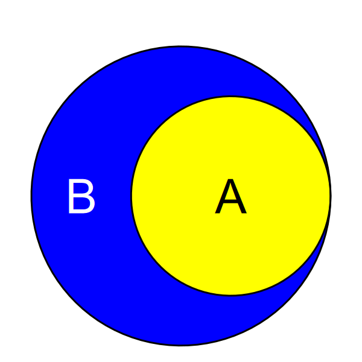
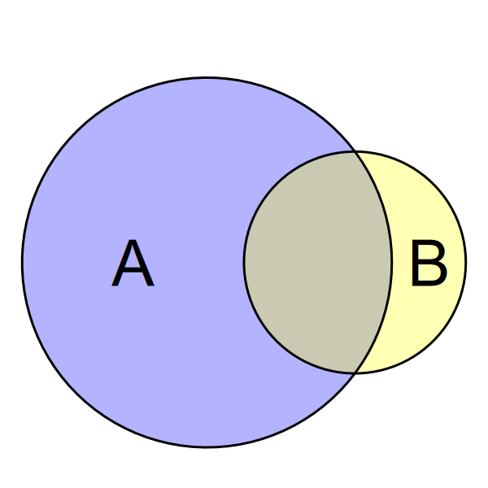

Probability that \(A\) is true if \(B\) is true
\[ \mathbb{P}(A | B) = \frac{\mathbb{P}(A \cap B)}{\mathbb{P}(B)} \]
or (equivalently)
\[ \mathbb{P}(A \cap B) = \mathbb{P}(A | B) \times \mathbb{P}(B) \]
This gives us a definition of independence:
\[ \begin{aligned} \mathbb{P}(A|B) &= \mathbb{P}(A)\\ \text{and}\\ \mathbb{P}(B|A) &= \mathbb{P}(B) \end{aligned} \]

We roll two dice.
Define the events
Calculate
\[ \mathbb{P}(A|B) = \mathbb{P}(X_1 + X_2 > 8 | X_1 = 6) \]
Compute the intersection:
\[ \begin{aligned} A \cap B &= (X_1 + X_2 > 8) \text{ and } (X_1 = 6)\\ &= \{(6,3), (6,4), (6,5), (6,6)\} \end{aligned} \]
\[ \mathbb{P}(A \cap B) = \frac{4}{36} \]
If \(A\) and \(B\) are mutually exclusive, then \[ \mathbb{P}(A \cup B) = \mathbb{P}(A) + \mathbb{P}(B) \]
Example:
\[ \begin{aligned} \mathbb{P}(X_1 = 2 \cup X_1 = 3) &= \mathbb{P}(X_1 = 2) + \mathbb{P}(X_1 = 3)\\ &= \frac{1}{6} + \frac{1}{6} = \frac{2}{6} = \frac{1}{3} \end{aligned} \]
Factorials get big quickly, and become too large for R to
calculate with, so we can calculate more accurately if we use the
logarithm of the factorials. R has a built-in function
lfactorial that returns the logarithm.
\[ \log\left(\frac{365!}{(365 - N)! \times 365^N}\right) = \log(365!) - \log((365 - N)!) - N \times \log 365 \]
Once we calculate this sum, the log of 365 and the log of \((365 - N)!\) will mostly cancel out, so we can use the \(exp\) function to take the inverse logarithm
## # A tibble: 24 × 2
## N p_e
## <int> <dbl>
## 1 1 2.73e-13
## 2 2 2.74e- 3
## 3 3 8.20e- 3
## 4 4 1.64e- 2
## 5 5 2.71e- 2
## 6 6 4.05e- 2
## 7 7 5.62e- 2
## 8 8 7.43e- 2
## 9 9 9.46e- 2
## 10 10 1.17e- 1
## 11 11 1.41e- 1
## 12 12 1.67e- 1
## 13 13 1.94e- 1
## 14 14 2.23e- 1
## 15 15 2.53e- 1
## 16 16 2.84e- 1
## 17 17 3.15e- 1
## 18 18 3.47e- 1
## 19 19 3.79e- 1
## 20 20 4.11e- 1
## 21 21 4.44e- 1
## 22 22 4.76e- 1
## 23 23 5.07e- 1
## 24 24 5.38e- 1